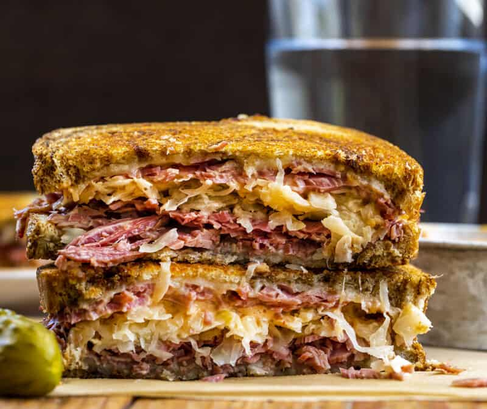

Reuben Sandwich

Description
"The Reuben sandwich is a classic deli delight, featuring tender, smoky corned beef
layered with Swiss cheese, sauerkraut, and zesty Russian dressing. Served between perfectly
toasted rye bread, this sandwich is a textural wonder, with a crispy outer layer and a luscious,
savory interior."
Ingredients
- 8 slices of rye bread
- 1/2 pound of thinly sliced corned beef
- 8 slices of Swiss cheese
- 1 cup sauerkraut, drained
- 1/4 cup Russian dressing
- 2 tablespoons butter
- Pickle spears (optional, for serving)
Instructions
- Preheat a griddle or a large skillet over medium heat.
- Lay out the slices of rye bread on a clean surface.
- On four of the slices, layer the corned beef, Swiss cheese, and sauerkraut.
- Spread Russian dressing on the remaining four slices of bread and place them on top of the meat and cheese to make sandwiches.
- Spread a thin layer of butter on the outside of each sandwich.
- Place the sandwiches on the preheated griddle or skillet and cook for about 3-5 minutes on each side, or until the bread is golden brown, and the cheese is melted.
- Remove the sandwiches from the griddle or skillet and let them cool for a minute.
- Slice the sandwiches in half diagonally and serve them with pickle spears if desired.
Enjoy your homemade Reuben sandwich! It's a delicious and satisfying classic that's easy to make at home.
Home